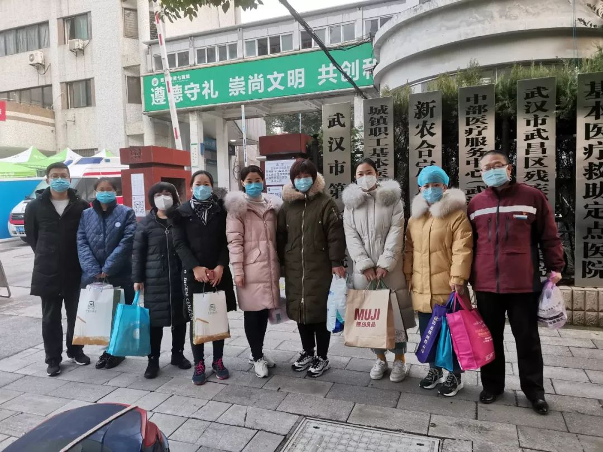
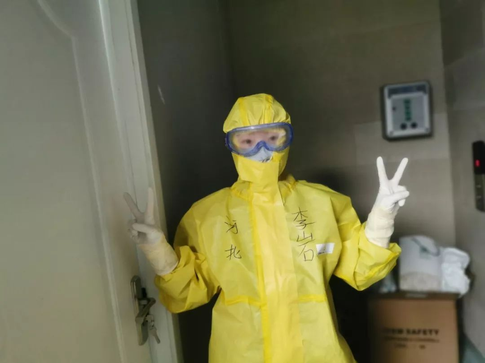
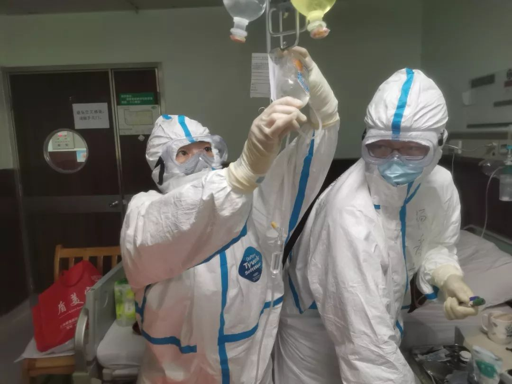

武汉收治确诊病人最多的定点医院：从一片混沌到有了章法
原文链接 备份链接 ********** *****除夕那段时间主要是无序，工作量大、急迫，突然之间与病毒狭路相逢，刺刀见红，没有后援，只有拼命，那个时候是一片混沌状态。现在有所好转，形势每天都不一样，我每天处理的问题也不一样，还都是紧急 …
文/六筒
李岩半年前刚去过武汉，和家人去旅游，主要想看看黄鹤楼。那还是夏天，热气蒸得人头上冒烟。高温挡不住蜂拥的游客，摩肩接踵，拥塞的车辆在大道上艰难挪动。“真是个大都市”，她想。
李岩是河北医科大学第二医院呼吸与危重症二科护士长，从医二十年，非典时就上过前线。今年大年初二晚，她坐着火车，和同事们千里驰援武汉。这一次，武汉的街上空空荡荡，车也没几辆了，只见着警察、清洁工和医护人员。刚开始他们还称赞城市的防护意识好，但日日如此，心底免不了生出些悲凉。

随着新冠疫情越发严重，来自全国各地的医疗团队赶往武汉，仅河北就派出735人。李岩是第一批去的，大家都是自愿报名，一天之内就集结了150名医护人员。她并没觉得害怕，毕竟曾经上过非典的战场，但她告诉我，这次的疫情让她感触更深。
武汉冬天阴冷，为了防止交叉感染，医院不能开中央空调。医护人员只能往防护服里塞贴身衣服，后方紧急协调了保暖内衣，还有爱心人士捐了许多秋衣秋裤。但白天出了太阳，忙活起来秋衣裤又湿透了。
年轻的女护士们剪下了长发，有的甚至理成了光头——“是个非常漂亮的小姑娘”，一位护士告诉我。
在他们身后，还有无数人用自己的方式支撑这场战役。就在前天，有两个武汉人开车过去，从车上卸下150箱牛奶，说是捐给医疗队的，没留下名字就走了；还有送苹果的、送蜂蜜的、送新鲜蔬菜的。这让他们很感动。
李岩有点后悔告诉父母自己去武汉了。老人家担心，每天晚上都等她一个报平安的电话。虽然有些不妥，但她的一位同事瞒住了父母，偶尔打个电话，只说“单位特别忙，加班”，就匆匆挂了。

以下是李岩的口述：
一、
我去年暑假来武汉旅游，去看黄鹤楼，车水马龙的。前些天再来这儿，整个街上都是那么萧条，觉得心里特别难受。
我们支援的是武汉市第七医院，我们来的时候，这里的医护人员已经很疲惫，很疲惫了。我看他们的排班，就是每天都有班，白天晚上连轴转。他们应该是在22号接到的通知，医院被列为定点医院，在这之前，他们是一个相当于二级的社区医院。
很快中南医院来帮他们改造，分区分带，分污染区、清洁区，反应很迅速，改造之后，很快就成立了四个病区。
病房成立之前，他们就一直在连轴上班了，真的很辛苦。我们来了后，我就和他们说，我们的护士先上，你们休息一下。我在的这个病区，一共48张床，我们的护士14个人，他们的护士是9个人，一共23个。
有个孩子，那天她本来应该前半夜11点就下班的，第二天早上6点钟再去协助科室完成一些采血工作。结果到了早上8点，我一到病区里头，护士告诉我，她一晚上没回去。因为太忙了，那天晚上一直在抢救病人。
第二天她还要上夜班，我说调一下吧。这个孩子说不用调，一调，所有人的班次都会动，就会打乱，我们就要重新排班。
她说“没事，我咬咬牙就能过来，放心，我没事”。

我们住在医院旁边的一家酒店里，里面全是医护人员。为了防止交叉传染，每个人都住单间。老板照顾我们北方人，还准备了很多馒头、面条。午餐在医院吃的，都是志愿者或者美团小哥送的爱心餐，吃住都没问题。
我们每天早上8点钟上班，7点20有班车来接，也都是志愿者。
早上到了医院开始分组交班。去看每个病人情况时，我们会给他打招呼，让他们能感觉到我们在关注着他。交完班之后，我会把护士们聚集到护理站这儿，打打气，说新的一天又开始了，大家加油！加油！
让大家喊一下加油，能释放一下情绪。毕竟穿上这身衣服，看见病人后，多少还是有压力的。
防护服穿着确实难受，穿脱都得十几分钟吧。先穿自己的工装，完了后就是一层蓝色的隔离服，再是防护服。习惯了还好，但肯定每天出汗。我防护服里套着保暖秋衣，防护服不透气，所以每天都是湿的。
现在一个护士要管8个病人，真的很忙碌。我们的工作中生活照护比较多，因为病人没有家属陪护，什么事情都要管；重病人也多，不少病人下不了床。
我们帮他们打开水、送饭，带他们去做检查。收拾病房是每天必须要做的，包括早起的病床整理，包括病人的大小便，尤其是在床上解大便的。有一个腹泻的病人，我们一天给他擦洗了5次，这些清洁工作一直都要做。我们现在既是护士，又是家属，是护工，还是保洁员。
有个护士连轴转，一晚上抢救两个病人，抢救完一个病人，另一个病人突然又不好了。抢救完后，她突然坐到地上大哭。哭完了擦擦眼睛，又继续干活了。后来医院找了个心理老师，给她开导了一下，就好很多了。处在这个压力下，想喊就喊出来，想哭就哭出来，因为人要释放压力。
现在情况好多了，特别是方舱医院开了之后，一些轻症病人被分流出去了。我们现在一个班次三到四小时，中午休息一小时。休息时，要喝一杯水，不敢多喝，但是一定得喝一口。因为我们都穿着防护服，出汗多，大家说话声音会很大。这时大家很少唠嗑，就看看手机，或者闭会儿目，养会儿神，马上就要接班了。

二、
我是2000年参加的工作，今年就要满20年了。工作没几年就遇上非典，当时我们医院成立了非典病房，第一批我就去了。当时我很年轻，一开始主任没让我去，我就去和主任要求。我当时刚结婚，老人不在身边，也没有孩子，爱人在部队上。主任问我，你想好了？我说我想好了。
这次支援武汉，我是初一晚上十一点五十接到主任电话的，当时我已经睡着了。她说要成立应急队，让我考虑一下，问科里人谁去。这么晚了，不可能叫别人，我说我去吧，我毕竟是科里护士长，就这么决定了。到了第二天她才告诉我，咱俩一起去，我没想到她也主动要求过来。
我跟我爱人和孩子在两地生活。他每年也就春节带着孩子才回来。今年是大年二十四到的家。大年三十那天，我在医院值夜班，初一紧接着又在科室值白班，年夜饭都没跟孩子一块儿吃。初一下班，回去补了个年夜饭，晚上就接了这个电话。
他们刚回来，我就走了。我觉得也挺对不起孩子。我爱人说你该去就去吧，你又是护士长，又参加过非典，你想去，我不拦着，去吧。大年初二出发了，初三凌晨三点多到的。
我孩子今年15岁，上高一。决定要去时他已经睡了，后来才告诉他。男孩子嘛，大了，我就说这是妈妈的工作，妈妈得过去，等妈妈回来再给你做饭，再好好照顾你。他也没有吭气。
有些事情我得让他知道，男孩子就得有担当。我干这个工作，我就得去。我想孩子心里是有感触的。他虽然没跟我说什么，但我看到他转发（有关各地医生驰援湖北的）朋友圈，他说我妈妈就是这其中之一，我为我妈妈自豪。他只要觉得妈妈做的是对的，我就很心安。
来武汉后，我每天都会给家人打电话，包括我的父母。我知道他们会很担心，毕竟我到疫情最严重的地方来了。如果一天不打电话，他们就睡不着觉，就会老等着。
有一次因为开会，我没给他们视频。那天都到晚上11点了，我妈给我打电话，她说她一直在等着我的电话。我就觉得非常对不起他们，这么晚了还这么惦记着。之后每次下了班，我第一时间就会先给他们说一句：今天下班了，没事，挺好的，放心吧。

三、
对病人来说，最重要的要有信心。你内心要强大，想着我能战胜它，那就有80%的可能了。我们一直在给病人鼓劲，走到哪个床上我们都会给他竖起大拇指，“你今天好多了”，我们经常会给他们这种暗示。
我们医院有个阿姨，前几天突然间病情重了，要上呼吸机。上了呼吸机她不耐受，特别憋得慌。人越烦燥就越耗氧，就想往下扒面罩，我们看她确实很痛苦。我问阿姨，你想不想活下去？她说我想，可是戴上这个很憋得慌啊。
我说我陪着你，你安静下来，自个儿心里默默数，慢慢把呼吸频率降下来。过了两天，阿姨就往好转的方向，血氧饱和度从70多升到了89，呼吸频率也从40多到了20多。
她一直在冲我们竖大拇指。她带着面罩，一直想说话。正好一个中南的大夫过来了，他对阿姨说，你记住她，她是河北队的护士长，她特别关心你，你一定要记住她。
阿姨明显好转了，她说等我出院后，要给你们送锦旗。我说你肯定能出院，我们等着。不过我们河北太远了，要送锦旗就送到中南医院去吧。
现在情况改观了很多，急诊也没那么多人了。方舱医院开了好几家后，收治了这么多病人，我们这里现在一般收治的是重症些的患者。
武汉的医护人员也让我很感动，他们从来不喊累。都是地道的武汉人，在保护自己的家园。我对那个连着上夜班的护士说，丫头，你真是武汉人的骄傲。她都不好意思了。可能她心里头就憋着那股劲，要干到什么程度，一定要挽救她的病人。这都是她的家人，她的家乡。
信心还是要有的！我觉得会越来越好的！
等到疫情结束了，所有的地方都解除封锁了，我想回家照全家福。之前从来没有想过，不知道今年是怎么回事儿，已经跟我爸妈、公公婆婆还有大姑姐都约好了要照全家福的，但是现在计划泡汤了。
等疫情过去了，我爱人和孩子假期回来时，我们一定要去照一张全家福！
——————

为了致敬像李岩这样的一线援鄂医护人员，1月26日，美团公益基金会宣布捐赠2亿元人民币。
截至2月19日，美团公益基金会已完成对山西、江西、安徽、江苏、河北、贵州、重庆、黑龙江、辽宁、上海、甘肃、宁夏、陕西13省区市援鄂医疗队的定向捐赠——对已派出的4299位成员账户发放5000元慰问金。
此外，河南、湖南、广东、福建等省也在同步推进中。
原文链接 备份链接 ********** *****除夕那段时间主要是无序，工作量大、急迫，突然之间与病毒狭路相逢，刺刀见红，没有后援，只有拼命，那个时候是一片混沌状态。现在有所好转，形势每天都不一样，我每天处理的问题也不一样，还都是紧急 …
原文链接 备份链接 澎湃新闻综合报道 新冠疫情发生以来，为了方便沟通交流，医护人员在背后写上名字，互相打气。 这些防护服上的字，如无声的誓词。 我们虽然看不见你们的脸庞，却从这些字里看到了希望。 “此行是为救治病人，不达目的不撤兵”——她 …
原文链接 备份链接 “ - 疫 情 之 下 - 武汉的疫情就像一簇紧簇的乌云，笼罩在每一个人的心头。但所幸，在这个受伤的城市中，在每台志愿者车里，在疲于奔波的路上，总有那么一群可爱的人，温暖着我们前线医护工作者的心。 ” 1 2020年 …
原文链接 [备份链接]() *************▲ *************2020年2月19日，在武汉市泰康同济医院，军队医护人员互相整理防护服。 （新华社/图） 全文共9028字，阅读大约需要20分钟。 此次派出的县级医院 …
原文链接 备份链接 **记者/佟晓宇 ** 编辑/石爱华 宋建华 刘畅穿上防护服，进入隔离室 离开一岁多的孩子，刘畅上了“前线”，给儿子自然离乳的计划，没办法实现了。 刘畅是一名耳鼻喉科的护士，她所在的医院是武汉市第一批收治新冠肺炎患者的 …